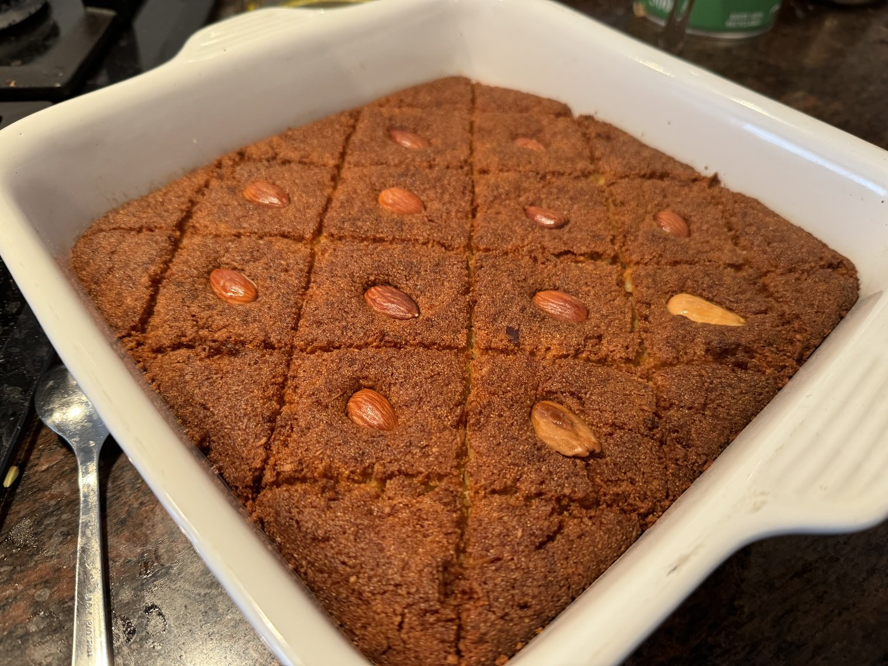

Asbousa
Ingredients
8×
- 250 g de azúcar
- 150 ml de agua
- el zumo de 1/2 limón
- 1 cdta de agua de rosas
- 1 cdta de agua de azahar
- 250 g de sémola fina
- 250 g de yogur
- 80 g de mantequilla derretida
- 1 cdta de levadura química
- 1 almendra

Preparación
Paso 1
Preparar el almíbar: hervir 150 g de azúcar con 150 ml de agua y el zumo de 1/2 limón 5min. Fuera del fuego, añadir 1 cdta de agua de rosas y 1 cdta de agua de azahar. Dejar enfriar.
Paso 2
Mezclar 250 g de sémola fina, 100 g de azúcar, 250 g de yogur, 80 g de mantequilla derretida y 1 cdta de levadura química.
Paso 3
Extender la masa en una fuente engrasada, marcar rombos con un cuchillo y poner 1 almendra en cada uno.
Paso 4
Hornear 35min a 180ºC, hasta que esté dorada. Al sacarla, regarla con el almíbar frío y dejar que lo absorba.